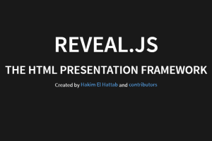

Projects

Parsing Three.js
One does not simply Parse three.js. Getting things wrong and keeping on going.
View Project


Maths Playground
When one gets frustrated at wolframalpha and matlab, the only sensible thing to do would be to make your own, right?
View ProjectTUG mod development
A highly ambitious 3D sandbox game, aiming at being a better minecraft.
View Project